Твій холодильник
вже знає, що на вечерю.
Додай або відскануй продукти та спеції, які є вдома. Nyamo миттєво підбере смачні домашні страви, покаже чого бракує, підрахує час і проведе за руку крок за кроком.
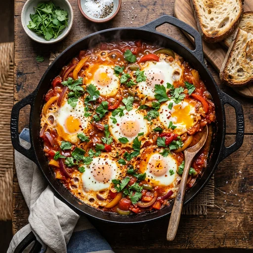
✓ Всі продукти з холодильника
3 шт. у наявності
Шакшука з томатами
Google Gemini
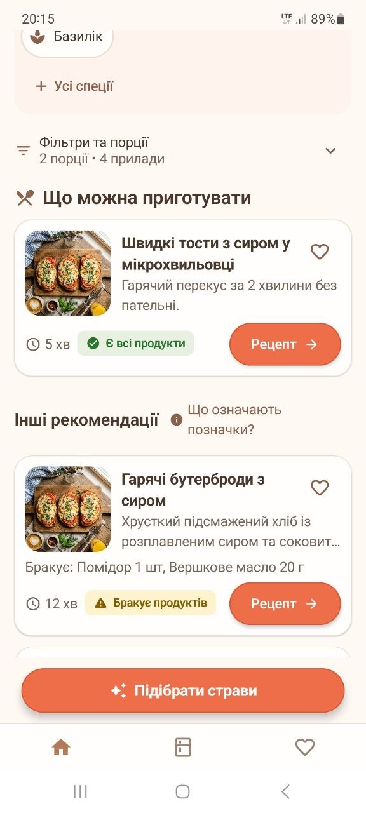
Спробуй прямо в браузері
Обери продукти, які зараз є у твоєму холодильнику. Алгоритм RecipeMatcher миттєво підрахує відповідність рецептів у реальному часі!
Підібрані страви
Оберіть інгредієнти вище, щоб побачити відповідні страви
Чому готувати з Nyamo — суцільне задоволення
Ми продумали кожну деталь кулінарного досвіду: від точних алгоритмів до дбайливого ставлення до вашого часу та приватності.
Точний алгоритм RecipeMatcher
Більшість кулінарних додатків шукають рецепти за випадковими збігами слів. Nyamo розрізняє обов'язкові та опціональні інгредієнти, перевіряє одиниці виміру та дає 3 чіткі статуси:
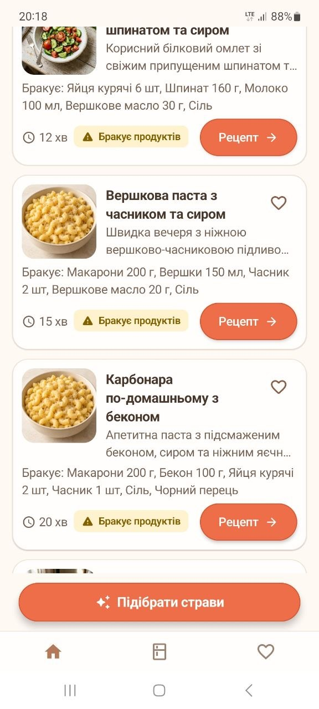
Розпізнавання фото продуктів
Не хочеш вводити вручну? Зроби знімок полиці холодильника чи продуктів на столі. Штучний інтелект запропонує список, а ти підтвердиш його в зручному діалозі перед пошуком.
Комора постійних запасів
Збережи свої постійні продукти (борошно, олія, спеції, сіль, гречка, крупи) в розділі «Комора». Під час нового приготування вивантажуй їх у пошук одним дотиком.
Покроковий фокус-режим
Великий контрастний шрифт, фокус лише на одному поточному кроці та великі кнопки переходу. Стан приготування зберігається в базі: якщо екран згасне чи ти відповіси на дзвінок — прогрес не зникне.
100% Офлайн & Приватність
Усі рецепти, словник на 170+ продуктів і ваші запаси зберігаються виключно на телефоні в локальній базі Room SQLite. Жодного примусового акаунта чи прихованого стеження за вами.
Динамічний перерахунок на будь-яку кількість порцій
Готуєш тільки для себе чи чекаєш компанію з 6 друзів? Обирай потрібну кількість порцій від 1 до 10 — грами, ложки та штуки інгредієнтів адаптуються автоматично, включно з текстами кроків.
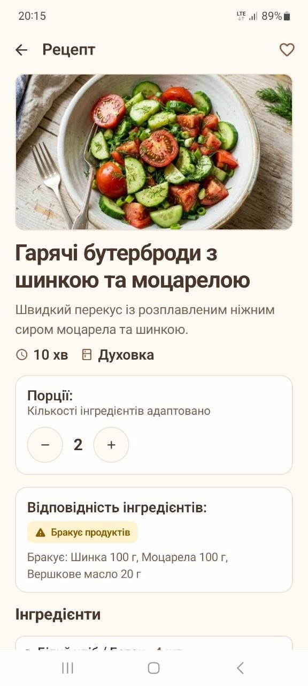
Теплий, затишний та інтуїтивний
Дизайн Nyamo створений так, щоб готувати було легко та приємно. Погляньте на реальні екрани додатку.
Швидке введення без обмежень
Вводьте продукти списком через кому або новий рядок (*«3 яйця, картопля 500г, томати»*). Розумний словник на 170+ канонічних продуктів розуміє українські відмінки, синоніми та пропонує швидкі підказки.
- Швидкі підказки при введенні
- Обробка неоднозначностей (наприклад, вибір виду сиру)
- Підтримка грамів, мілілітрів, штук та ложок
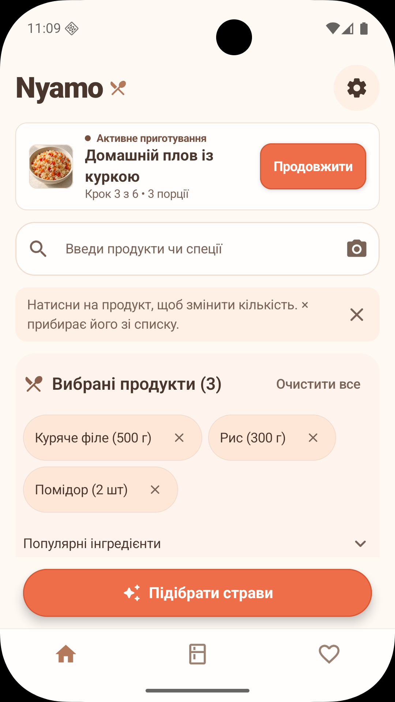
Повний контроль спецій та запасів
Сіль, чорний перець, олія та спеції не вважаються наявними за замовчуванням. Зручна панель спецій дозволяє швидко відзначити те, що дійсно є у шафці, без потреби вказувати точні грами солі.
- 26 популярних спецій та приправ
- Вибір одним тапом без ручного зважування
- Спеції не перевантажують список основних страв
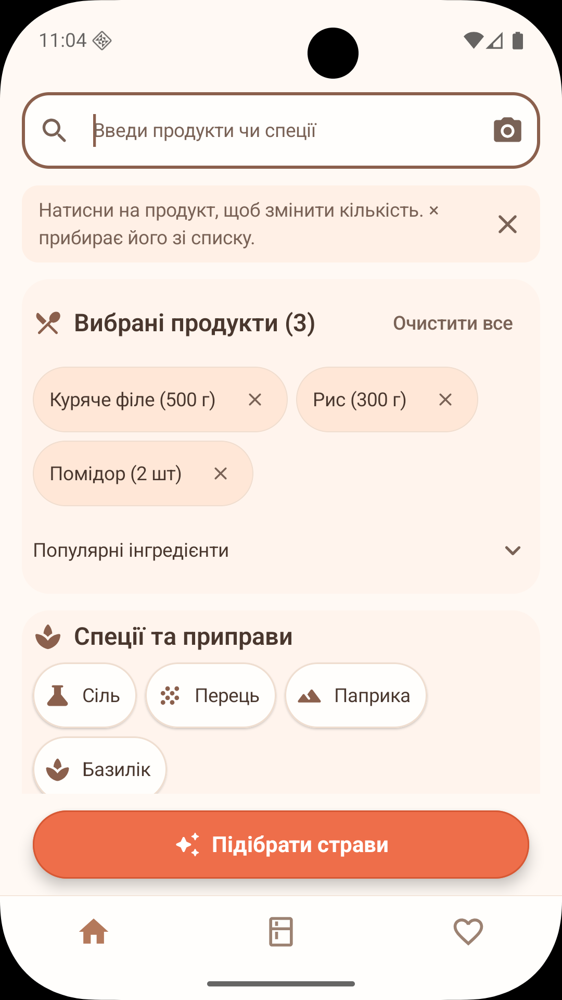
Миттєві рекомендації з чіткими статусами
Застосунок одразу впорядковує страви за доступністю. Ви одразу бачите, що можна приготувати просто зараз, а для яких страв не вистачає лише одного доступного інгредієнта.
- Фільтри за часом (15, 30, 45 хв, будь-який)
- Фільтр кухонного обладнання (плита, духовка, мультиварка)
- Збереження страв у власне «Обране»
Зручний перегляд рецепта та інгредієнтів
Кожен рецепт має апетитне зображення, точний час, список обладнання та деталізовані інгредієнти. Змінюйте кількість порцій на льоту!
- Автоматичний перерахунок грамів під порції
- Чіткий поділ на основні та опціональні продукти
- Перевірені покрокові поради шефа
Покроковий кулінарний помічник
Забудьте про складні кулінарні простирадла тексту, де губишся, що робити далі. Nyamo показує кожен крок окремо з великим читабельним шрифтом.
- Зручно читати навіть з відстані на столі
- Прогрес зберігається локально в базі даних
- Продукти не списуються примусово без згоди
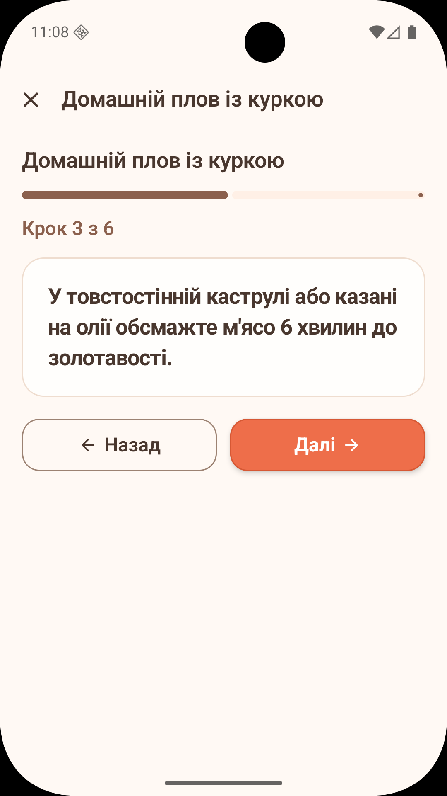
Прозоре розпізнавання за фото
Сфотографуйте вміст комори чи холодильника. Штучний інтелект Gemini визначить продукти та запропонує список, де ви зможете відредагувати кількість або видалити зайве одним рухом.
- Підтримка галереї та системної камери
- Повний контроль над списком перед збереженням
- Безпечна передача з видаленням EXIF-метаданих
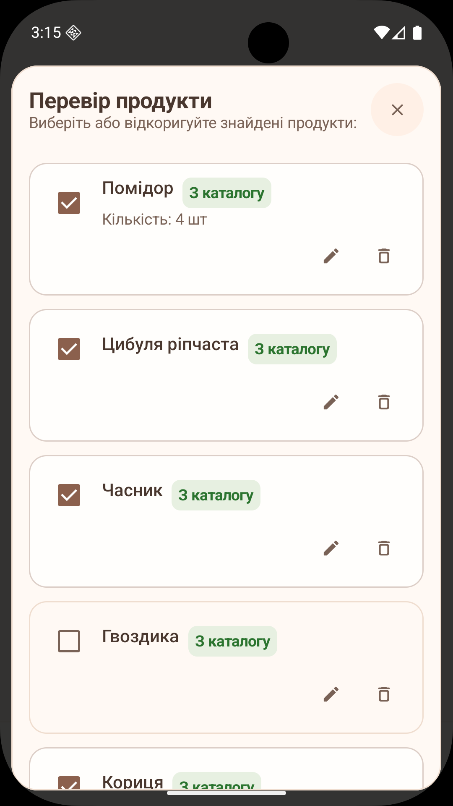
60+ перевірених домашніх рецептів
Від традиційного українського борщу та золотистих дерунів до швидкої пасти болоньєзе й ніжних сирників.
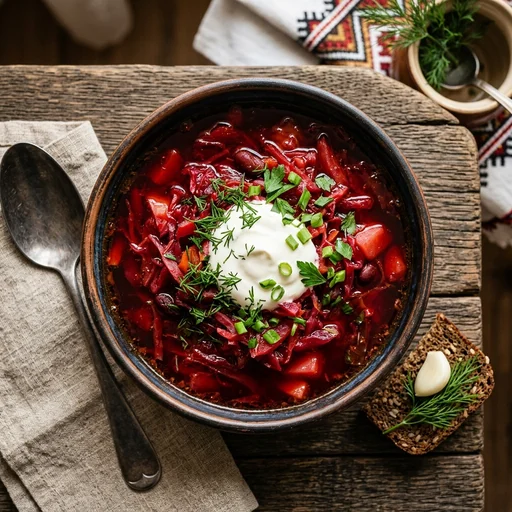
⏱ 60 хвСправжній український борщ
Наваристий червоний борщ з буряком, картоплею, капустою та ароматною зеленню.
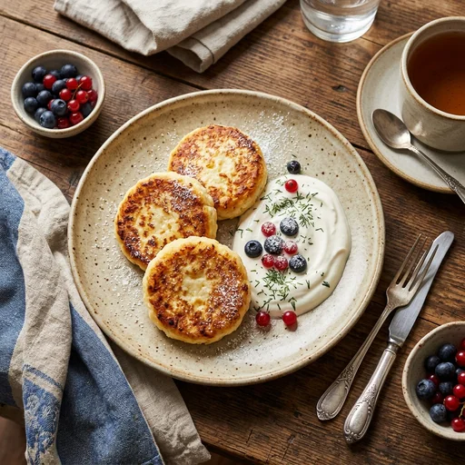
⏱ 25 хвДомашні сирники
Ніжні золотисті сирники з кисломолочного сиру з хрусткою скоринкою та сметаною.
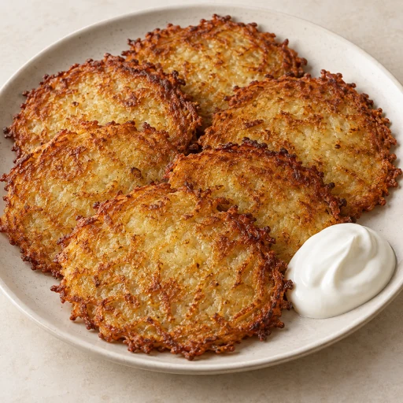
⏱ 30 хвХрусткі деруни
Апетитні картопляні оладки з цибулею та хрусткою рум'яною скоринкою.
Ароматна шакшука
Яйця, запечені в соковитому томатному соусі з солодким перцем, часником та травами.
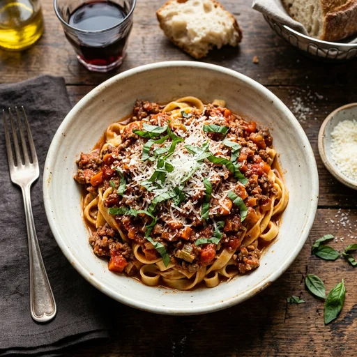
⏱ 40 хвПаста болоньєзе по-домашньому
Класична паста з ніжним м'ясним соусом, стиглими томатами та сиром.
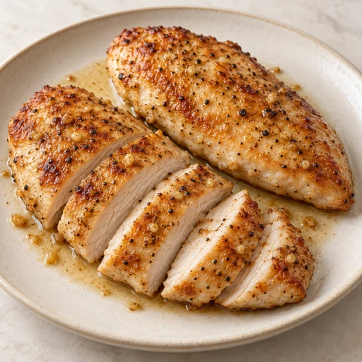
⏱ 20 хвСоковите куряче філе
Швидка підрум'янена куряча грудка зі спеціями та золотистою скоринкою.
Чому саме Nyamo?
Погляньте, чим Nyamo відрізняється від звичайних кулінарних сайтів та додатків.
| Критерій | Звичайні кулінарні сайти | Nyamo («Нямо») |
|---|---|---|
| Підбір з того, що є | ✕ Вимагають купити 15 нових інгредієнтів | ✓ Шукає рецепти суворо під ваші продукти |
| Розрахунок нестачі | ✕ Незрозуміло, що є, а чого бракує | ✓ Точний список: наприклад, «бракує 1 яйця» |
| Доступ та монетизація | ✕ Пейволи на рецепти, платні щомісячні підписки | ✓ Усі 60+ рецептів відкриті та безкоштовні, без платних підписок |
| Робота без інтернету | ✕ Не працює без мережі | ✓ 100% офлайн (усі рецепти в базі Room) |
| Приватність & Дані | ✕ Вимагають акаунт, збирають аналітику | ✓ Жодних акаунтів, усі дані тільки на пристрої |
| Перерахунок порцій | ✕ Фіксовано (найчастіше на 4 особи) | ✓ Миттєво від 1 до 10 порцій у всіх кроках |
Почни готувати смачніше вже сьогодні
Завантажуй нативний Android-застосунок Nyamo абсолютно безкоштовно. Встановлюй APK або долучайся до закритої бети в Google Play.
Наведи камеру смартфона для швидкого завантаження
Часті запитання
Так, на 100%! Увесь каталог перевірених домашніх рецептів, вбудований словник із понад 170 продуктів, база запасу «Комора» та розумний алгоритм RecipeMatcher зберігаються безпосередньо у локальній базі даних вашого смартфона. Інтернет потрібен виключно для опціональної функції AI-розпізнавання продуктів за фото.
Ви обираєте фото або робите знімок через камеру. Перед надсиланням додаток автоматично очищає чутливі EXIF-метадані (геолокацію, модель камери) та передає стиснене зображення моделі Google Gemini. Сервер повертає список виявлених інгредієнтів, який ви власноруч перевіряєте та підтверджуєте. Сервер Nyamo не зберігає ваші фото у сховищі.
Додаток є безкоштовним для кожного користувача. Усі рецепти та функції відкриті відразу, без платних підписок чи заблокованого контенту. Додаток підтримується за рахунок ненав'язливої реклами, яка органічно вбудована та не заважає готувати.
Ми не вважаємо сіль чи олію наявними автоматично — це часта помилка інших додатків. У Nyamo є окрема швидка шторка спецій, де можна відзначити сіль, перець та улюблені приправи в один клік, а також зберегти постійні запаси у розділ «Комора».
Ні, Nyamo дбайливо ставиться до ваших записів і ніколи не видаляє інгредієнти самовільно. Ви самі вирішуєте, коли оновити список продуктів або очистити комору.